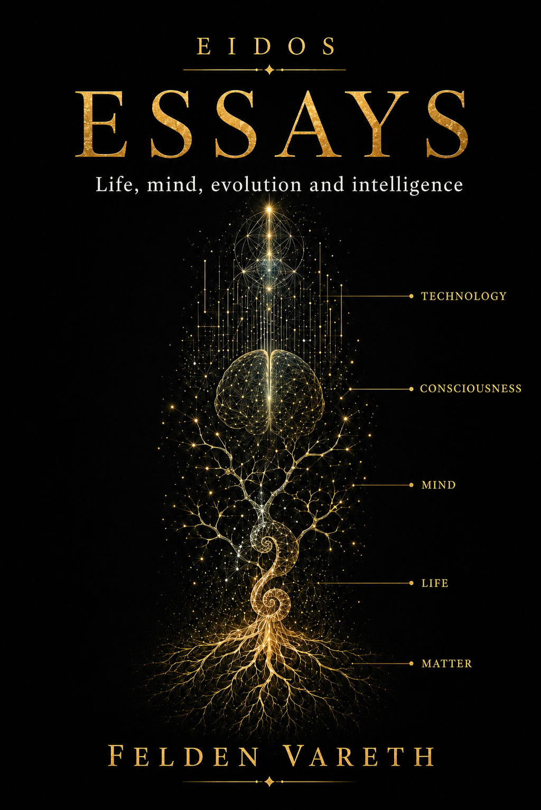

Perhaps happiness was never a reward waiting at the end.
So perhaps the question “what do I need to be happy?” already contains a small trap.
We know something else, too. The experience of feeling well goes beyond any objective inventory of possessions. Expectations, comparisons, learning, memory, attention, culture, relationships, a sense of control and our interpretation of experiences all play a part.
Living conditions matter. So do relationships, health, safety and resources. An illness cannot be solved by a good attitude, and no one should be burdened with the responsibility to feel happy amid devastating circumstances. Decades of research on well-being show that some events can change satisfaction with one's life for years.
Perhaps one of our mistakes is treating happiness as a place we can arrive at and stay in.
Our new reality begins to feel normal.
Then one of the most extraordinary properties of our nervous system comes into play.
Often we do achieve what we wanted. And for a while, it works: the news arrives, the contract is signed, the exam is passed, the other person replies, the project succeeds. We feel joy, relief, pride or excitement. Sometimes a mixture of all of them.
There is a phrase we repeat for much of our lives: “when I achieve this.” When I finish studying. When I find a job. When I earn more. When I have a house. When I publish. When I fall in love. When my children grow up. When I can stop worrying. Then, we think, a different state will arrive. A kind of inner territory that we call happiness.
A Word Too Big for One Meaning
Before asking how to achieve happiness, we should clarify what we are talking about. “Happiness” is an everyday word that encompasses different phenomena. We may feel pleasure for a few seconds, be in a good mood for an afternoon, feel satisfied when assessing our whole life, or sense that what we do has meaning. All these states are related, but they are not equivalent.
Psychology frequently uses the concept of subjective well-being to study part of this territory. It includes cognitive evaluations, such as life satisfaction, and affective components, such as the relative frequency of pleasant and unpleasant emotions. The important word is “subjective,” because what researchers are trying to measure is an individual's experience.
Two people may have the same income, age, housing and working conditions, yet assess their lives differently. The same person may also judge their life differently at two points in time even though their wealth, home and job have not changed.
This presents an obvious scientific difficulty. Happiness has no thermometer that we can put under someone's tongue. Researchers use questionnaires, satisfaction scales, repeated sampling throughout the day, experimental tasks, physiological measurements and brain imaging. Each method captures part of the phenomenon and has its limitations.
It is worth remembering this when headlines claim to have discovered “the exact amount of money needed for happiness” or “the formula for happiness.” Science can study patterns, associated factors, mechanisms and probabilities. It cannot turn a complex, subjective human experience into one universal number.
References for this section
When I Get There
Much of our lives is organised around anticipation. We work not only for what we do today but for our image of a future in which certain conditions will be different.
“When I get there” is an extraordinarily powerful mental framework.
It can sustain years of effort. Preparing for a competitive examination, earning a degree, building a business, conducting research, writing a novel or saving for a home would be difficult to explain if our minds responded only to the immediate present. We can imagine a future reward and act today because of it.
The problem arises when we mistake that ability for an emotional promise.
We imagine achieving a goal and also how we will feel afterwards. People often misjudge the intensity and duration of their future emotions. Research on affective forecasting has repeatedly identified an “impact bias”: we tend to overestimate how long certain positive or negative events will dominate our experience.
This helps explain a familiar feeling. A goal can matter enormously before we achieve it and occupy much less of our attention a few months later. Its importance may have been real, while life continued to unfold around it.
The future we imagined from afar becomes the present. And the present has a strange tendency to become ordinary.
References for this section
Adapting Does Not Always Mean Returning
So-called hedonic adaptation describes the tendency for the emotional impact of certain changes to diminish over time. A much stronger version of this idea once became popular: after any event, everyone would eventually return to a fixed level of happiness.
The evidence is far more interesting.
Longitudinal studies by Richard Lucas and colleagues show that people may adapt substantially to some events and much less to others. Marriage, for example, is often accompanied by changes around the event and, on average, a subsequent movement towards earlier levels of satisfaction. Unemployment, however, can leave persistent effects. Long-term disability has also been associated with lasting reductions in subjective well-being in representative studies.
This prevents us from turning adaptation into a comfortable philosophy. It would be unjustified to assure someone who has lost mobility, work, security or a loved one that they will eventually get used to it. Some people recover considerably, others only partially, and still others are profoundly changed. Individual differences are enormous.
Yet adaptation still explains an essential part of ordinary life.
The promotion that seemed extraordinary becomes the position we hold. The new house becomes home. The object we longed for becomes part of the scenery. An improvement can continue to benefit us while no longer producing, every day, the emotion it produced when it first arrived.
Our psychological system does not seem devoted to contemplating forever what has already changed. Rather, it updates the point from which we look again.
References for this section
The Brain That Compares
There is another reason why the size of a reward is not enough to explain its effect.
The brain compares reality with its expectations.
In the classic work of Wolfram Schultz, Peter Dayan and Read Montague, the activity of certain dopamine neurons was linked to reward prediction errors. An unexpected reward triggered a different response from the same reward when it was already predicted. As learning progressed, some of the signal could shift towards the cue announcing it. When an expected reward failed to arrive, activity decreased at the moment it should have appeared.
This does not mean dopamine is “the happiness molecule.” That simplification is wrong. Dopamine systems participate in learning, motivation, action selection and reward processing, among other functions. Conscious pleasure cannot be reduced to a single neurotransmitter either.
The important point here is something else.
A learning brain needs to record not only how much it receives, but also whether the world turned out better or worse than expected, making expectations part of experience itself.
And expectations can change even before we receive the reward. Imagine that we have spent months planning to buy a particular car. We like it, we can afford it and we are convinced it will delight us. On the day we go to buy it, we discover that a new version has just appeared, with a few improvements. The car we wanted is exactly the same. It has not lost any of its capabilities or deteriorated overnight. But our reference point has changed, and we may no longer derive the same satisfaction from it; we may even feel frustrated about not buying the newer model.
We do not need to own something better for the value we attach to what we wanted to change. Sometimes it is enough to know that another possibility exists, one we now perceive as superior. The object stays the same; what we expected from it does not.
A reward of ten can seem excellent if we expected five, and disappointing if we expected twenty.
References for this section
More Than the Value of the Reward
Robert Rutledge and his colleagues brought that logic to a question much closer to our subject. In decision-making experiments involving monetary rewards, they combined computational models, repeated reports of momentary happiness and brain imaging.
The result was not that “money cannot buy happiness.” It was considerably more precise.
Momentary happiness during the task was better explained when the model included recent rewards, expectations and prediction errors. The same objective outcome could feel different depending on what had been expected.
This provides a key to a common experience. An improvement does not always bring the same satisfaction. Our perceived possibilities, what we thought we deserved, our expectations and what we have just experienced all matter.
It also explains why continually raising expectations can have a paradoxical consequence. A life that is objectively better may produce fewer positive surprises when every improvement has already become part of what we consider normal.
Expectations are necessary. Without them it would be difficult to plan, learn or pursue goals. But an expectation can become a debt we believe the future owes us, and when that happens, getting what we expected no longer feels like a gain: it becomes the bare minimum.
References for this section
Money, Value and Satisfaction
At this point, one of the most frequently asked questions about happiness arises.
Does money buy happiness?
The scientific answer is more complicated than either of the familiar slogans.
Money matters because it allows us to obtain things that matter. It buys food, housing, security, healthcare, education, mobility, time and the capacity to deal with unexpected events. Poverty restricts real options and creates real problems. Treating material circumstances as a mere psychological detail would be absurd.
The relationship between income and well-being is complex. A well-known study by Daniel Kahneman and Angus Deaton, published in 2010, distinguished between an overall evaluation of life and everyday emotional well-being, finding different patterns for the two measures. Years later, Matthew Killingsworth, using repeated experience sampling, found that experienced well-being continued to rise with income in his dataset, even above the threshold popularised by the earlier work.
In 2023, Killingsworth, Kahneman and Barbara Mellers published a joint analysis to reconcile part of that apparent contradiction. The conclusion once again showed that the relationship depends on which aspect of well-being we measure and how it is distributed across people.
But one piece is still missing.
Money has objective value as a resource. The satisfaction it can provide depends on what each person values.
Imagine two people looking at the same Ferrari.
For one, it may represent years of effort, success, recognition and confirmation that they have attained the social position they wanted. Seeing it outside their home each morning might bring enormous satisfaction. For someone else, who has spent years building schools, carrying out research or caring for others, that same car might have virtually no emotional value.
If the second person could choose between the car and the resources needed to complete the project to which they have devoted an important part of their life, they might enthusiastically choose the project.
Although the object's price is identical, its capacity to produce satisfaction changes completely.
With three hundred thousand euros, one person can buy a car. Another can fund a laboratory. Another can pay off a mortgage that has constrained their decisions for years. Another can secure their children's education. Another can leave a job they hate and regain their time. Another can fund a school. Another can travel for years.
The transformation that amount makes possible in each life is different.
Money expands our possibilities. It does not decide which of those possibilities we will consider valuable.
This distinction helps explain why asking how much money is needed to be happy may frame the problem badly. The prior question is what a particular person needs in order to regard their own life as satisfying.
Our answers emerge from a mixture of needs, personal history, ambitions, bonds, culture, expectations, values, ethical convictions and priorities. Money can bring us closer to many of them, reduce worries and expand freedom of choice. Its psychological effect depends partly on how each person wishes to use it and the value they assign to what it enables them to do.
Moreover, a material improvement can retain its benefits after the initial emotion fades. Becoming accustomed to having heating does not make heating useless. No longer feeling excited about health insurance does not mean it stops protecting us.
Emotional adaptation and the objective value of an improvement belong to different realms.
References for this section
Who We Compare Ourselves With
Owning something and feeling that we have enough are different experiences.
Human beings also assess their position in relative terms. We look at our income and at the meaning it acquires in the environment in which we live, both consciously and outside our immediate awareness.
A study by Christopher Boyce and colleagues found that income rank within a reference group predicted life satisfaction better than an interpretation based solely on absolute income. Other studies have continued to find relationships between relative position, comparison and well-being.
This has curious consequences.
Someone may improve their material conditions and feel worse if the people they consider comparable improve much more. Another person may regard as extraordinary a standard of living that, for someone raised in a different environment, is simply the starting point.
Our ancestors did not need to know the average income of ten million strangers. We carry in our pockets a window that can show us, every minute, better houses, more admired bodies, more exotic trips, more successful careers and carefully selected versions of other people's lives.
This does not make social media the universal cause of unhappiness. But it expands, to an unprecedented degree, the number of people with whom we can compare ourselves. For millennia, the reference group had physical boundaries and was limited to an individual's surroundings. Now it can encompass the entire planet.
References for this section
Happiness Is Learned Within a World
We also learn what we are supposed to want.
We are born without knowing what salary represents success, how large a house should be, at what age we ought to start a family, how many trips are enough or what an admirable life is supposed to look like. Some of those reference points are built within society.
Cross-cultural studies of well-being have revealed differences in the relationships between life satisfaction, self-esteem, family, finances and cultural characteristics. Ed Diener and Marissa Diener, for example, studied thousands of university students from dozens of countries and found that the strength of these associations varied between societies.
Even the idea of happiness itself occupies different places in different cultures. Some traditions place greater value on excitement and individual achievement; others give more weight to harmony, balance, belonging or less highly aroused emotional states.
This does not mean that everything is cultural. We share a biology, physical needs, emotional systems and a profound dependence on social life. But culture supplies many of the criteria we use to interpret whether a life is going well.
So we pursue goals with a brain that evolved over hundreds of thousands of years, within a society capable of changing its expectations in a single generation.
And then we wonder why “enough” is such a difficult amount to define.
References for this section
Other People
One element appears very frequently when researchers study people who report high levels of well-being.
Relationships.
In a classic study by Ed Diener and Martin Seligman of very happy people, high-quality social relationships stood out as a characteristic of the group. Years later, a replication and extension using international data again highlighted the role of social resources and the satisfaction of basic needs.
Being happy can make relationships easier, and good relationships can promote well-being. Personality, health, circumstances and environment influence both. Correlational research does not allow us to turn every association into a single causal arrow.
It is difficult to ignore the fact that we are a species whose lives depend heavily on social bonds.
The article The Animal We Still Are dealt, in part, with belonging, groups, cooperation and protection. Here the same animal appears from a different angle. Acceptance, intimacy, trust and the possibility of sharing experiences are not ornaments added to an already complete life. For a social primate, they may be among the conditions from which that life is evaluated.
Experimental findings also show that using resources to benefit others can increase an individual's own well-being. In a well-known study by Elizabeth Dunn, Lara Aknin and Michael Norton, spending money on other people produced greater increases in happiness than spending it on oneself under the conditions studied.
Perhaps part of happiness can only be understood in the plural.
References for this section
Diener, E. & Seligman, M. E. P. — Very happy people — Psychological Science (2002)
When the Body Plays a Part Too
We do not always need the world to change for our experience of it to change. Sometimes it is enough for our organism to change.
Mood also depends on biological processes that we do not voluntarily control. Hypothyroidism, for example, can cause fatigue, difficulty concentrating and depressive symptoms. Hormonal changes associated with pregnancy, the postpartum period or menopause can also influence psychological well-being, although their effects vary considerably between people. In some cases, treating a medical condition can significantly improve a person's emotional state without any change in their external circumstances.
But hormones are only one part of this relationship. Brain function also depends on neurotransmitters and systems involved in motivation, sleep, the stress response and reward processing. Serotonin and noradrenaline are involved in some of these processes, although it would be wrong to reduce happiness to the concentration of a particular substance.
There are also drug treatments capable of alleviating certain mood disorders. Paroxetine, for example, belongs to the selective serotonin reuptake inhibitors, a family of antidepressants used to treat depression and some anxiety disorders. It can help some people recover part of their well-being, but it does not automatically produce happiness, nor does it work as a simple replacement for a missing substance. Research also does not justify claiming that depression is, in itself, the consequence of a serotonin deficiency. These medications require medical assessment, may have side effects and produce different results in different patients.
This introduces an important distinction. Being dissatisfied with our life, going through a period of sadness and having a depressive disorder are not equivalent situations. They may share some manifestations, but their causes and the ways of addressing them may differ. Sometimes we can change our expectations or how we interpret what we experience. At other times, we need psychological support, medical treatment or both.
Our attitude influences how we experience life. But that experience also depends on the organism through which we live it.
References for this section
MedlinePlus — Hypothyroidism: symptoms, mood and treatment
MedlinePlus — Depression: biological, hormonal and psychological factors
A Life That Feels Like Our Own
Happiness does not seem to amount simply to accumulating pleasant experiences.
A life without effort might sound attractive for a few minutes. Then the question arises: what would we do with it?
Self-determination theory, developed by Edward Deci and Richard Ryan, has spent decades examining the relationship between motivation, psychological functioning and the satisfaction of three needs proposed by the model: autonomy, competence and relatedness.
Autonomy means experiencing an important part of our actions as our own, even when obligations exist. Competence refers to feeling able to act effectively and develop abilities. Relatedness describes the experience of connection and belonging.
What is interesting is that all three involve movement.
Learning a difficult subject can be frustrating and, at the same time, profoundly satisfying. Caring for another person can demand effort. Raising a child can reduce rest and multiply worries. Building a company, writing a novel or investigating a problem for years produces countless moments that nobody would describe as pleasurable.
And yet we may consider these activities part of a good life.
This forces us to separate two questions whose answers sometimes coincide and sometimes do not.
Do I feel good at this moment?
Am I satisfied with the life I am building?
References for this section
Attitude, Without Magic
After everything above, we can return to the initial intuition: happiness as an attitude. The phrase needs an important qualification. Attitude matters greatly, but it does not explain everything. We cannot choose for an illness to stop hurting, for a loss to cease to matter, for poverty to stop restricting our options or for an assault to have no consequences. Nor do we all begin with the same organism. Genetics, hormones, personality, physical health and psychological state condition our response to the world.
Some events can overwhelm a person's psychological resources for a very long time. Severe depression, trauma, chronic pain, a devastating loss or certain illnesses can radically reduce the room from which someone confronts their own life. Presenting happiness as a simple voluntary decision would be unfair and scientifically impoverished.
But between those extremes lies an enormous territory. Much of our life takes place there, and attitude matters a great deal. Two people can face similar difficulties and experience them very differently. One may remain trapped for years in what happened. Another may suffer, endure a terrible period and, with time, rebuild a life around what occurred. The reverse also happens: one person may have health, financial security, relationships and relatively few objective difficulties yet remain persistently dissatisfied, while another in comparable circumstances finds many reasons to enjoy life.
Circumstances, therefore, are not enough to predict how a life will be experienced. Between what happens to us and the experience we construct lie attention, expectations, comparison, interpretation, habits, goals and how we respond to events. Part of this set is what we usually call attitude.
And attitude also operates in good moments. We may achieve something we have wanted for years and direct all our attention towards the next thing we lack. We may receive good news and diminish its value by comparing it with another person's success. We may reach a goal and turn it into normality before truly enjoying it. We can also recognise that what was an aspiration for years is now part of our life, enjoy it for a while and then pursue another goal.
Attitude, then, is not only about overcoming adversity. It also affects our ability to recognise and experience good moments when they arrive. A study by Matthew Killingsworth and Daniel Gilbert used experience sampling with thousands of people to ask them, at random moments, what they were doing, what they were thinking about and how they felt. Minds wandered very frequently, and greater mind-wandering was associated with lower happiness in that dataset.
That finding does not turn attention to the present into a universal key to happiness. Our ability to leave the present in our imagination allows us to plan, write, create and learn. But it reveals a paradox: we can be enjoying a pleasant experience while our mind inhabits another, reach a goal while devoting all our attention to the next, or compare the real present with an imaginary life that never includes the inconveniences of everyday existence.
Perhaps this should also lead us to reconsider what we mean by a happy life. It is difficult to understand happiness as a permanent state. No human life consists only of pleasure, satisfaction or tranquillity. There is fatigue, loss, frustration, fear, boredom, illness, uncertainty and bad days. A happy life might be better understood as one containing enough moments of well-being, satisfaction, connection, purpose and enjoyment that, when considering it as a whole, the person regards it positively.
Not all these moments carry equal weight. An extraordinary afternoon can remain in memory for years. A difficult period can acquire meaning over time through what we learned, built or changed during it. An unpleasant effort can belong to a project that provides enormous satisfaction. That is why a happy life cannot simply be reduced to counting pleasant moments and subtracting unpleasant ones, even though those moments are part of the overall experience.
And our attitude changes many of them. We do not choose all our circumstances. Nor do we fully choose our biology, temperament or the first experiences that helped build our way of interpreting the world. We do retain, within limits that differ for each person and moment, some capacity to modify our response. We can learn to adjust expectations, choose some comparisons and abandon others, decide where to direct our attention, accept that certain things are beyond our control and act on those we can still change.
We can also learn to recognise a good moment before adaptation turns it into scenery, and try not to let a bad moment occupy more territory than it inevitably must. Circumstances determine part of what happens to us. Attitude influences how much of it becomes suffering, learning, satisfaction or well-being.
Happiness may be less like a possession we own and more like a relationship we maintain with our own life.
We are not happy once and for all. We have happy moments, go through terrible times, build projects that satisfy us, lose things that matter, become accustomed to our circumstances and desire again. The imperfect sum of all this, along with how we interpret it, eventually forms what we call a more or less happy life.
Attitude does not guarantee happiness. But it can profoundly change how much of our life we are able to recognise as happy while we are living it.
References for this section
Killingsworth, M. A. & Gilbert, D. T. — A Wandering Mind Is an Unhappy Mind — Science (2010)
An Animal That Has to Keep Moving
That leaves the evolutionary question.
Why are we like this?
Evolution does not select organisms so that they can understand the meaning of existence or attain a philosophical state of fulfilment. Blindly and cumulatively, it favours traits that increased the probability of survival and reproduction in particular environments.
An organism that finds food needs to experience enough reward to repeat useful behaviours. But an organism that remains satisfied forever after eating once has a problem.
It will have to look for food again.
The same can be said, with enormous qualifications, of other motivational systems. Exploring, learning, relating to others, obtaining resources, seeking a mate, protecting offspring, improving status or avoiding threats all require organisms capable of updating their behaviour as the environment changes.
From that perspective, eternal satisfaction would be strange.
Rewards also help us learn what is worth repeating. Desire directs actions before a goal is reached. Surprise tells us that the world has turned out differently from what we expected. Adaptation prevents every change from occupying our entire attention forever.
Evolution needed animals capable of deriving enough reward from certain achievements to act again.
Perhaps evolution never needed happy animals. It needed animals capable of seeking happiness.
That phrase is an evolutionary interpretation. It is consistent with a well-established observation: reward, learning, motivation and expectations form dynamic systems, far removed from any final destination.
And perhaps that is fortunate.
Because the same property that prevents a goal from producing eternal euphoria allows another to appear. We learn another language. Begin another project. Want to get to know another person. Visit another place. Raise children. Investigate. Build. Try again.
A species capable of remaining satisfied forever might build considerably less.
References for this section
The Problem of Building Paradise
And here the question returns to EIDOS.
Much of human history can be read as an attempt to reduce specific causes of suffering. We have developed medicine to combat disease, agriculture to combat hunger, homes to protect us from the weather, laws against violence, insurance against uncertainty, technologies to overcome many of our limitations, and networks of cooperation capable of supporting millions of people who will never meet.
It would be absurd to conclude that because we adapt, it makes no difference whether we live with antibiotics or without them, in safety or without it, in freedom or under constant threat.
But EIDOS poses a harder question.
What happens afterwards?
What would happen to a civilisation capable of eliminating much disease, extending life by centuries, reducing many material shortages and offering built environments with a degree of control that we can scarcely imagine?
Would unhappiness disappear?
Everything suggests that this would not be enough.
Alongside circumstances would remain expectations. Comparison. Identity. Love. Belonging. Recognition. Fear of being left behind. The need for one's own life to have meaning to the person living it.
A human being in a better world would still use a brain that evaluates that world from within.
Even a new beginning could soon become normal.
Does that invalidate paradise?
The traditional idea of heaven, of a place where we would all be happy forever, also deserves some reflection. If we arrived there with our minds as they are today, what would happen when the extraordinary became ordinary? Without fear, without loss, without deprivation or uncertainty, would we still desire, anticipate, and look forward to things? Perhaps achieving eternal happiness would require more than transforming the world around us. We would have to change our very nature. From a religious perspective, we might answer that it is not our biological mind that enters heaven, but our spirit. Yet that would simply shift the question into another realm: what would the consciousness of such a spirit have to be like to experience a happiness that never faded, that required no new expectations and never grew accustomed to what it possessed? How different would it have to be from our present way of feeling, remembering, and desiring? And if that transformation were so profound, to what extent would we still be ourselves?
In EIDOS, that distinction runs through much of the conflict. Technology can change the body, the environment, longevity and possibilities. It cannot guarantee by decree what meaning each consciousness will give to those possibilities.
The Happiness We Might Design
So far, we have taken it for granted that our desires arise before our decisions.
We desire a goal, and then we try to reach it.
Some of our desires are learned. Culture shapes our aspirations. Experience changes our preferences. Success and failure alter our expectations. Reward systems learn to assign value to stimuli that previously meant nothing to us.
But then...
If happiness depends partly on what we learn to value, could we design a happy person by modifying their desires?
Imagine a technology capable of intervening precisely in the mechanisms that assign value to an experience.
We could make an empty room feel sufficient.
We could make a repetitive task produce satisfaction for decades.
We could reduce ambition until any frustration arising from difficult goals disappeared.
From a definition centred on pleasure, part of the problem might appear to have been solved.
From another perspective, the result would create a new problem.
Someone might feel satisfied because we had changed what they were capable of desiring. Their well-being would be real to them. So would the intervention that had decided in advance what things could matter to them.
But would they then still be the same person, or someone else?
This dilemma links psychology with autonomy. A satisfying life is also often associated with the sense that our goals belong to us. If a third party could edit those goals, they could increase satisfaction while simultaneously reducing the freedom we attribute to the person.
And that forces us to distinguish two concepts that we often mix together. If they could one day be separated, we would have to decide which of the two we considered more important.
Feeling good. Or
Living a life we recognise as our own.
A Conversation in the Penthouse
This question was already present, in another form, in EIDOS 1.
In the penthouse conversation, Arián and Narél discuss a humanity that has eliminated many of the urgent needs that organised life for millennia. Death has receded. Time seems inexhaustible. Many needs can be met almost instantly.
Narél raises the subject. Perhaps it was fortunate that happiness remained unattainable. Every summit revealed another. The hope of reaching it drove people to learn, change and search. In Eidos, where there is always another moment and much uncertainty has disappeared, even pleasure risks becoming predictable.
[...]
She turned around and disappeared inside, leaving behind a faint scent of lavender and sleep. For an instant, the fragrance brought back to Arián a memory of his life before Eidos, an old thought he preferred not to dwell on and managed to set aside with a trace of nostalgia.
Arián and Narél went on talking for a long while.
“Happiness is an abstraction. I always thought it was fortunate that happiness was unattainable,” Narél said, his voice scarcely louder than the murmur of air crossing the broad terrace. “An abstraction, yes... but a blessed one. Because if we ever truly reached it, what would come next?”
Arián did not answer. He watched the sky, the stars, the buildings, the lights, the symmetrical shapes of the surroundings.
“The hope of reaching it,” Narél continued, “was what moved us. It made us learn, change, search. Every time we thought we were about to touch it, another summit appeared, another desire. That achievement gave us a foothold from which to aspire to something new. And that was how we lived. Pursuing the next desire with our souls held in suspense.”
“And wasn't that exhausting? Living without ever arriving?”
“Perhaps. But it gave meaning to each step. Here... in Eidos... people have stopped looking forward to things. They no longer feel anticipation. Without the vertigo of uncertainty, everything is postponed, because there will always be another moment. Even what they call happiness has become predictable. And what is predictable, however pleasurable it may be, does not move us.”
Narél raised his glass and took a sip without taking his eyes off the city.
“A happy life,” Narél added, “does not depend on achieving any one particular thing. It is the sum of small and great experiences, of the positive attitude with which we choose to regard each of those moments and life itself, of the hope with which we approach each step, each success, and how we remember them once they have passed. It also depends on the attitude with which we face each failure. It means living in the knowledge that something valuable might happen at any moment. It is the optimism, emotion and longing with which each moment is lived. The more of those happy moments we have, the happier our lives will be. And that... that, my old friend, no longer exists here. Moments have lost their value.”
Arián closed his eyes for a moment. He had nothing to say in response. Because, deep down, he too had stopped looking forward to things.
Arián stood up slowly and walked to the edge of the viewing platform.
“A horizon without an end is no horizon at all,” he said quietly. “And perhaps that is why... nobody moves forward here.”
[...]
The novel explores that idea through fiction. The scientific research discussed in this article reveals some real mechanisms that make it plausible: adaptation, expectations, prediction errors, comparison, motivation and learning.
The resemblance does not prove that Narél's thesis is correct in every respect.
But it does show that the literary question has a recognisable basis.
A consciousness evaluates its life through much more than the quantity of rewards received. Expectations, the effort invested, assigned meaning, comparisons and the possibilities that remain open afterwards all matter.
That is why a world capable of granting almost every desire could discover that, if every desire is immediately fulfilled, some of what made achieving it valuable may disappear.
If a system chose to avoid that problem by modifying its inhabitants' desires, would they still be happy, or would it be the system that had decided what ought to be enough for them that was happy?
A Mind Without Desire
The question becomes stranger still when we stop talking about ourselves.
If we were someday to build a conscious artificial intelligence, would it need happiness?
Much of our reward system has a biological history. We need to maintain our organisms, seek energy, avoid injury, reproduce, learn which actions work and navigate social relationships. An intelligence created with a different body, different maintenance mechanisms and a different cognitive architecture might need different states.
It could have goals without hunger.
Preferences without pleasure.
Learning without dopamine.
But would having goals be enough to have desires?
A system can optimise a function without experiencing anything. Today's algorithms do so constantly. Adjusting parameters, maximising a mathematical reward or choosing an action does not demonstrate the existence of conscious satisfaction, frustration or expectation.
If subjective experience were ever to arise in an artificial intelligence, we would need to distinguish between the mechanism directing its behaviour and any experience accompanying that behaviour, if such experience existed.
And perhaps we would discover that happiness is too human a word to describe it.
Or we might discover that any consciousness capable of comparing reality with its desires eventually builds some version of what we call well-being.
For now, we have no answer.
There is another possibility. A mind unable to adapt to rewards could become trapped in the eternal pursuit of the same stimulus. Adaptation that occurred too quickly could drain every reward of value. Eliminating desire altogether might also erase much of what moves a mind to act rather than remain indifferent.
Happiness might not be an intelligence's objective, but a consequence of having objectives.
Happiness Was Not Waiting at the End
Perhaps that is why we keep making the same small mistake.
We place happiness after the goal.
When I have this.
When I finish that.
When I get there.
But every arrival changes the place from which we look again.
Goals retain all their value. They organise behaviour, provide direction and make it possible to build things that would never exist without them. Nor do we need to accept every situation or abandon ambition. Ambition can be part of a deeply satisfying life.
The problem arises when we turn every objective into a prerequisite for allowing ourselves to feel good.
Because then happiness always lives a few months or years ahead.
Perhaps a more reasonable way to understand it is as a changing state of harmony between who we are, what we do, what we expect, the people with whom we share our lives and how we face their inevitable difficulties. Not a permanent harmony.
No human life is permanently harmonious.
There will be pain, fear, loss, frustration and bad days. Eliminating every unpleasant emotion does not seem a sensible definition of happiness either. Fear protects. Sadness responds to real loss. Frustration signals obstacles. Even dissatisfaction can drive us to change a situation that deserves to be changed.
Perhaps part of happiness lies in not allowing these disruptions to prevent us from recognising the life that exists around them.
And then the sentence changes.
“I'll be happy when I get there” no longer seems like a necessary promise.
Happiness is not a destination to reach. It is a way of relating to the journey and to the goals we still need.
Fortunately, there will be more afterwards.
Bibliography and main resources
Diener, E. & Seligman, M. E. P. — Very happy people — Psychological Science (2002)
Killingsworth, M. A. & Gilbert, D. T. — A Wandering Mind Is an Unhappy Mind — Science (2010)
Beyond this article
Novel
EIDOS
A science fiction novel about consciousness, identity and the possibility that the human essence might continue beyond the body.

Essays
EIDOS — Essays
Nine essays on life, mind, evolution, consciousness, identity and artificial intelligence, exploring the same questions as this blog.
Comments